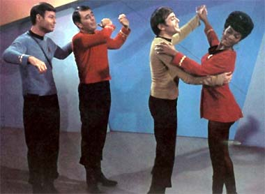
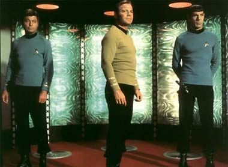
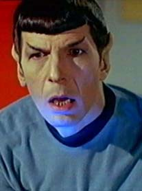

|

Clique aqui
para visitar o
Acervo de colunas


|
A sobrevivncia da Srie Clssica
 A Nova Gerao teve qualidade superior Srie Clssica em quase todos os aspectos, porm envelheceu precocemente nos ltimos anos, principalmente as trs primeiras temporadas, que ficaram muito com cara de produo anos 80. verdade que a srie original tambm tem a cara dos anos 60, mas esse foi um perodo cuja "face" mantm hoje melhor interesse do que a dos anos 80. A Nova Gerao foi um marco por mostrar que uma srie de TV de fico cientfica de alto oramento podia fazer sucesso. Os filmes da Nova Gerao para o cinema no fizeram jus ao potencial da srie, principalmente o ltimo, "Nemesis", que de qualidade inferior e fracassou nas bilheterias. Esse fator, infelizmente, pode tambm prejudicar muito a credibilidade da srie. Deep Space Nine, por muitos considerada como a melhor srie de Jornada nas Estrelas de todos os tempos (posio que acompanho), talvez seja a srie que, junto Srie Clssica, melhor sobreviva nas prximas dcadas. Foi uma srie que comeou um tanto morna nos trs primeiros anos, mas encontrou seu caminho certo no quarto e manteve uma qualidade incrvel at o seu final no stimo ano. Deep Space Nine conseguiu o feito de ser a nica srie de Jornada que conseguiu explorar todos os seus personagens sem preteries; cada membro do elenco teve seu momento de brilho em diversos episdios. Nesse aspecto superou a Srie Clssica, em que a interao bsica se dava apenas entre Kirk, Spock e McCoy, pois em DS9 a todos os sete integrantes do elenco foram dadas oportunidades para mostrar seu potencial.  Alm disso, foi a que contou com o melhor time de atores, todos muito bons, com ressalvas para Terry Farrell, que era a integrante de menor talento. DS9 encontrou sua tbua de salvao na figura do Dominion, os viles da srie. Foi a primeira srie de Jornada a trazer um aspecto indito na franquia, qual seja, uma srie de combates sucessivos contra um inimigo recorrente. nesse aspecto que a srie garantir sua sobrevivncia, pois trata-se de uma frmula clssica de fico cientfica j utilizada inmeras vezes em outras sries de TV e filmes, mas que funcionou perfeitamente em DS9. Quem no mostra interesse por uma srie entre mocinhos e bandidos poderosos aliengenas, onde as chances de vitria do lado do bem so remotas? Quem no se sente atrado por uma causa aparentemente perdida (o personagem Eddington que o diga)? Os episdios parte da guerra com o Dominion tambm se mostraram muito bons, como por exemplo "Hard Time", "Trials and Tribble-ations", "Children of Time" e "Far Beyond the Stars". Certamente no foi a Jornada nas Estrelas idealizada por Gene Roddenberry, mas foi uma excelente srie e merece ser redescoberta no futuro. Voyager foi a pior srie de Jornada nas Estrelas e est fadada a ser considerada como um mal que quanto antes esquecido melhor. Interessante notar que quando Voyager surgiu, em 1995, quase a totalidade dos fs acreditaram que seria uma das melhores sries de Jornada, ainda mais porque estreou durante uma fase fraca da Deep Space Nine em seu terceiro ano e pelo fato de que a maioria dos fs preferiam uma srie ambientada em uma nave espacial e no em uma estao espacial. As coisas se inverteram rapidamente quando Voyager despencou de qualidade j na metade de seu primeiro ano e a DS9 melhorou muito em seu quarto ano. Talvez Voyager seja lembrada como o nico precedente de srie ruim, com baixa audincia e crticas negativas por todos os lados, que sobreviveu por sete longos anos. A explicao fcil: era a srie que comandava o novo canal da Paramount, a UPN. A audincia era muito baixa, mas conseguia ser suficiente para manter o canal vivo. Era melhor manter essa margem do que cancelar a srie e arriscar perder o mnimo que tinham naquele momento e matar de vez o canal. Enterprise j nasceu desgastada. Os produtores Berman e Braga jogaram sujo com os fs dessa vez. Foi prometida uma srie absolutamente diferente das demais, com eventos anteriores Srie Clssica, no sculo 22. A srie j est na metade do segundo ano e se tem mostrado uma verdadeira decepo. Praticamente todos os episdios so cpias mal disfaradas de segmentos das sries anteriores. A inteno de dar srie uma roupagem mais atual ser a prpria corda que a enforcar a curto prazo. Essa srie vai envelhecer muito mais rapidamente do que as demais. Muitos fs at suspeitam que a enigmtica Guerra Fria Temporal que a srie menciona seja na verdade um bote salva-vidas para os roteiristas. Se esgotarem as idias para o sculo 22, pode-se cogitar introduzir elementos (e personagens) de outras sries de Jornada passadas no sculo 24. Ainda h tempo para Enterprise mudar e melhorar, pois h esperana de que, assim como A Nova Gerao e DS9, essa srie encontre seu rumo l pelo terceiro ano. Mas com todo esse "esforo" (sarcasmo) que Berman e Braga esto fazendo, dificilmente podemos esperar uma melhora no futuro. Jornada nas Estrelas precisa de um descanso urgente e por prazo indeterminado. Os fs j esto saturados (de tanta porcaria ultimamente). Ao meu ver a franquia tem dois perodos que representam o fim do que era bom e especial. O primeiro momento foi em 1991, com a despedida da Srie Clssica no sexto filme, "A Terra Desconhecida"; o segundo foi em 1999, com o episdio final de Deep Space Nine, mais do que apropriadamente intitulado "What We Leave Behind" ("O Que Deixamos para Trs"). No esqueci de A Nova Gerao; ela se situa dentro dos perodos que mencionei e representa um dos pontos mais altos da franquia no tocante a qualidade.  A Srie Clssica talvez sobreviva a essa era negra em Jornada nas Estrelas, pois, como foi dito acima, uma srie que se mantm por si mesma, com elementos e visual completamente diferentes das sries atuais e, portanto, menos suscetvel de cansar o pblico. Alm disso, parece ser a srie de Jornada que sempre mantm um certo nvel de respeito por parte do pblico geral. E devemos lembrar que Spock um dos personagens de TV mais conhecidos no mundo todo e elemento da cultura pop.Vamos torcer pela Srie Clssica! Luiz
Felipe do Vale Tavares f de Jornada, DVDs e fico
cientfica e escreve sobre Srie Clssica para o Trek
Brasilis |
 A
Srie Clssica de Jornada nas Estrelas foi produzida entre 1966 e 1969 e foi diferente de qualquer outra a que a audincia estivesse acostumada, pois trazia temas que tratam sobre o ser humano, disfarados de fico cientfica. Vrios tpicos importantes como a busca pela paz, o fim dos preconceitos raciais e a explorao do prprio ser interior foram abordados de forma inteligente, principalmente no primeiro ano da srie.
A
Srie Clssica de Jornada nas Estrelas foi produzida entre 1966 e 1969 e foi diferente de qualquer outra a que a audincia estivesse acostumada, pois trazia temas que tratam sobre o ser humano, disfarados de fico cientfica. Vrios tpicos importantes como a busca pela paz, o fim dos preconceitos raciais e a explorao do prprio ser interior foram abordados de forma inteligente, principalmente no primeiro ano da srie.